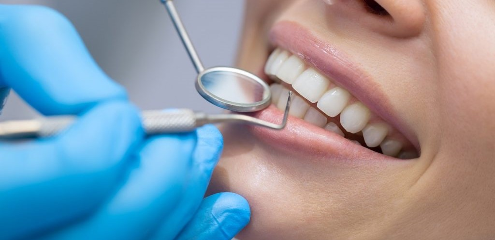

Servicios médicos en Hospital Oasis
Ginecología
Especialidad de la medicina que se centra en el estudio del sistema reproductor femenino; como el útero, la vagina y los ovarios, y también de la prevención de enfermedades futuras.

Cirugía
Práctica que implica la manipulación mecánica de las estructuras anatómicas con un fin médico, bien sea diagnóstico, terapéutico o pronóstico.

Odontología
Encarga del diagnóstico, tratamiento y prevención de las enfermedades del aparato estomatognático, el cual incluye además de los dientes, las encías, el maxilar superior, el maxilar inferior.